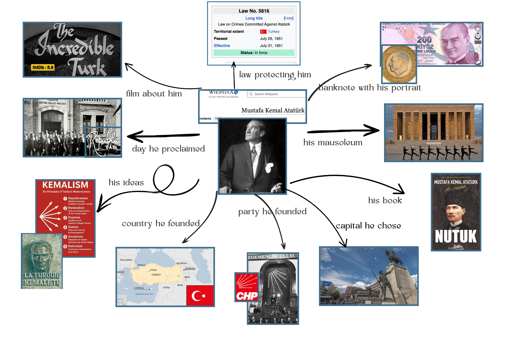

The Idea
This project does not describe Mustafa Kemal Atatürk as a person. It looks at how a nation's founder is kept alive after death, through the buildings, books, films, money, laws and ideas that keep pointing back to him.
Atatürk is used here as a bridge subject. Each item in the project is a real entity (a place, event, organisation, concept or cultural object), and each one is connected to him in some way. Together they show one concept: how memory is built and protected inside cultural heritage.

Why this topic
A founder figure is a strong test case for Linked Open Data because the links are not obvious. A mausoleum, a banknote and a law belong to very different classes, yet they all carry the same memory. Modelling these different types and relations is exactly what the project asks for.
The Items
The table below lists the ten items plus the central subject. For each one it shows its ontology class, its entity type, and its authority record (Wikidata), which links the local data to an external, shared identifier.
| # | Item | Entity type | Ontology class | Authority (Wikidata) |
|---|---|---|---|---|
| 1 | Mustafa Kemal Atatürk | Person | crm:E21_Person |
Q5152 |
| 2 | Republic of Türkiye | Country | schema:Country |
Q43 |
| 3 | Republican People's Party (CHP) | Political party | schema:PoliticalParty |
Q19079 |
| 4 | Anıtkabir | Mausoleum | schema:Mausoleum |
Q615404 |
| 5 | Turkish lira banknote | Object | crm:E84_Information_Carrier |
Q172872 |
| 6 | Nutuk | Book | schema:Book |
Q2005693 |
| 7 | The Incredible Turk | Movie | schema:Movie |
Q31190822 |
| 8 | Republic Day | Event | schema:Event |
Q803181 |
| 9 | Ankara | City | schema:City |
Q3640 |
| 10 | Kemalism | Concept | skos:Concept |
Q269443 |
| 11 | Law No. 5816 | Legislation | schema:Legislation |
Q1519065 |